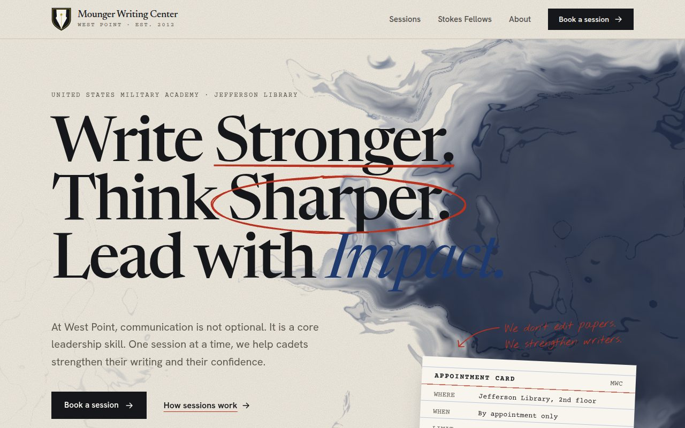
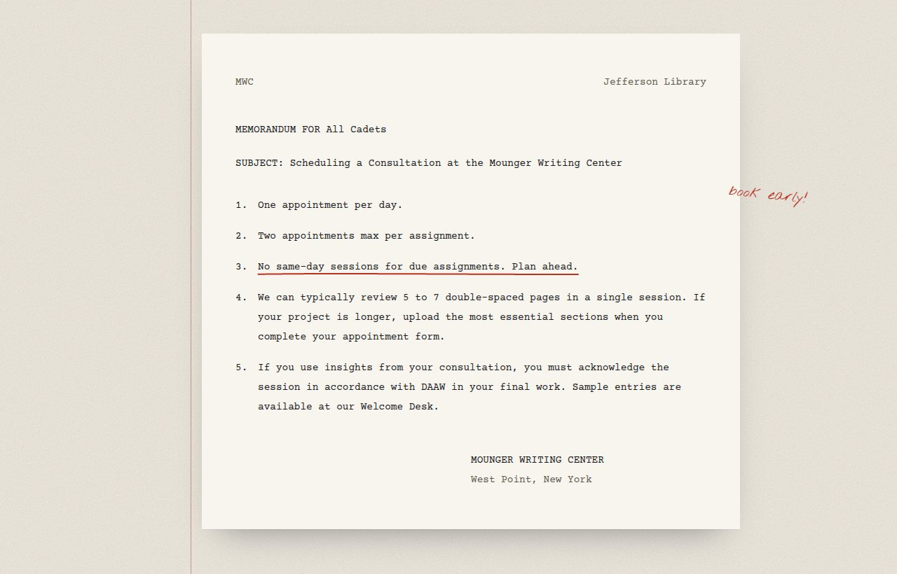
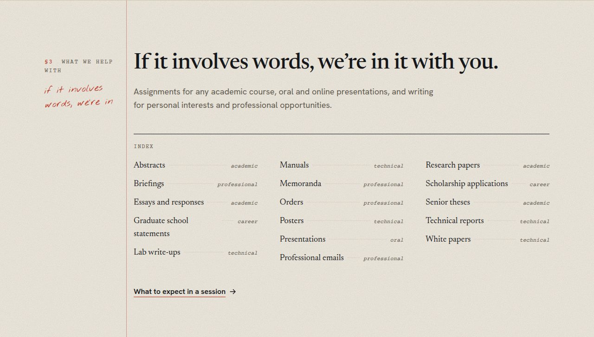
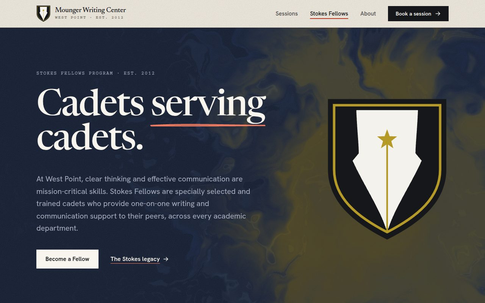
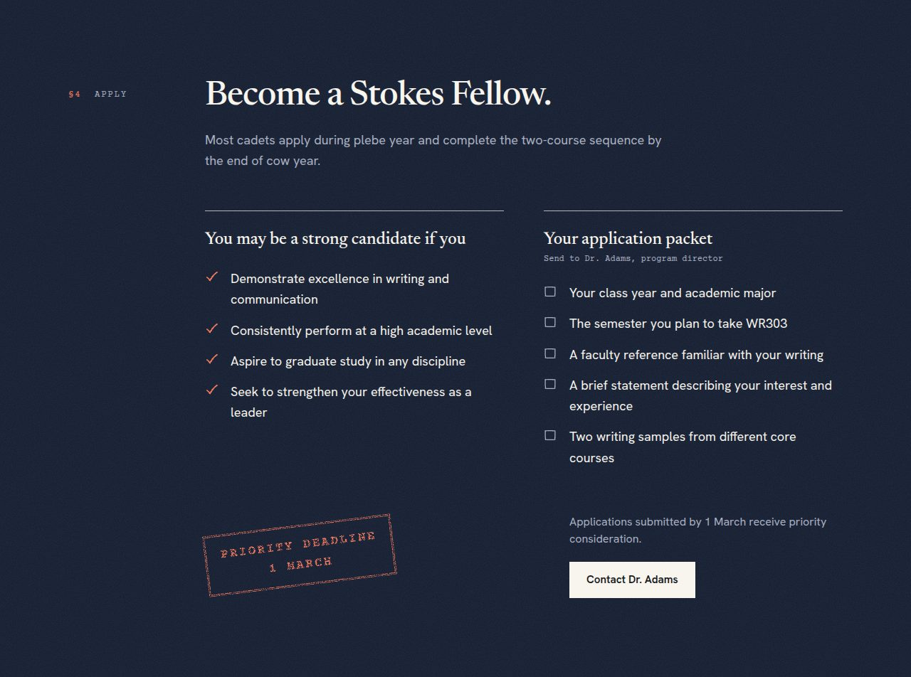
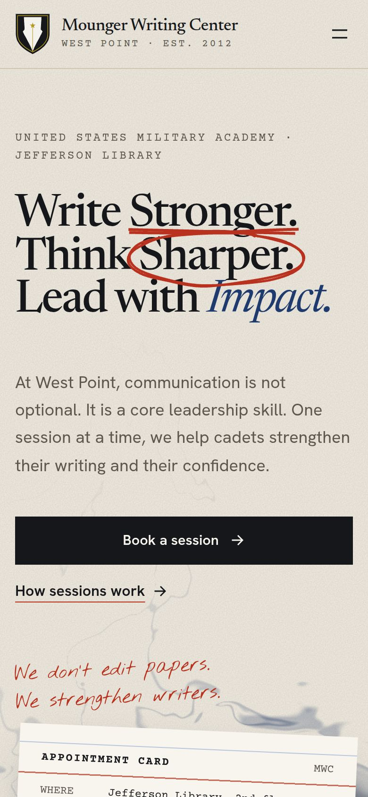

Everything cadets needed, in one long scroll
The center’s official page covers a lot: the mission, what a session looks like, eight cadet FAQs, the Stokes Fellows Program, seven more FAQs about the program, and two faculty bios. Booking happens on a separate system.
The most practical details were the hardest to find. The rules a cadet needs before booking (one appointment per day, two per assignment, no same-day sessions for due work, five to seven pages per visit) were tucked inside collapsed FAQ answers. So were the steps to apply as a Fellow and the 1 March priority deadline.
My goal was to put each piece of information where a cadet would look for it, and to give the center a visual identity of its own.
A draft on a consultant’s desk
My first version used the familiar black and gold look of a military academy site. It was clean, but it looked like every other template. So I started over from what the center actually does: cadets bring drafts, and Fellows read them with a pencil in hand.
The site is set on warm paper with blue-black fountain-pen ink and red-pencil marks. Headlines get underlined and circled by hand as you scroll. Each kind of content is set in a format cadets already know:
Rules inside a collapsed FAQ
The booking limits sat in the answer to “How many appointments can I schedule?”
An Army memorandum
The rules open the Sessions page as a typed memo, a format cadets read and write every week.
Basics scattered across paragraphs
Location, hours, limits, and page counts appeared in different sections.
A library appointment card
All of it typed on one catalog card on the home page, fitting for a center in the Jefferson Library.
Writing types listed in prose
Sixteen kinds of writing were spread through several FAQ answers.
A book index
Every kind of writing, alphabetized with dotted leaders, like the back of a textbook.
Application steps inside an FAQ
What to send and when to send it were buried under “How do I apply?”
An application packet
A checklist of what to send, with the 1 March deadline landing as a red rubber stamp.
Four pages, one visual language






Built to be fast, accessible, and easy to edit
- Next.js 16, TypeScript, and Tailwind CSS 4. Every page is prerendered as static HTML.
- A custom WebGL fragment shader simulates ink spreading through water using domain-warped noise, with darker pooled edges like drying watercolor. It pauses when off screen or in a background tab, and shows a single still frame to visitors who prefer reduced motion.
- rough-notation draws the red-pencil underlines, circles, and strike-throughs. Paper Shaders prints archival photos as ink halftone. Motion animates the appointment card and the stamp.
- All text lives in plain data files, separate from the layouts, so the center’s staff can update wording without touching the design.
- Checked at desktop and phone widths with no horizontal scrolling, with semantic landmarks, visible keyboard focus, and a skip link.
All program information comes from the Mounger Writing Center’s official page on westpoint.edu and the West Point Association of Graduates. This is an independent student redesign, not the official West Point website.
In progress
The site is built and working. Next steps are adding archival and current photos of the center, confirming the booking system, reviewing the copy with the center’s directors, and deploying it.
Start from the subject, not the template
The most useful design decision was to stop starting from a template and start from the subject. A writing center is about drafts, feedback, and revision, so the site is too: every format on it is something a cadet has already held in their hands.